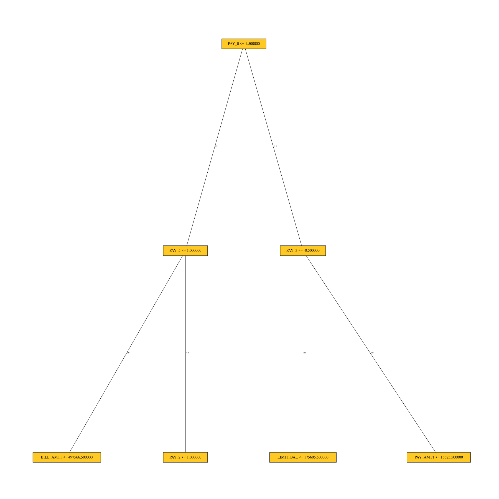

Decision Tree Surrogate Explainer Demo
This example demonstrates how to interpret a Scikit-learn model using the H2O Sonar library and plot decision tree.
[1]:
import logging
import pandas
import webbrowser
from h2o_sonar import interpret
from h2o_sonar.lib.api import commons, explainers
from h2o_sonar.explainers.dt_surrogate_explainer import DecisionTreeSurrogateExplainer
from h2o_sonar.lib.api.models import ModelApi
from sklearn.ensemble import GradientBoostingClassifier
[2]:
results_location = "../../results"
# dataset
dataset_path = "../../data/predictive/creditcard.csv"
target_col = "default payment next month"
df = pandas.read_csv(dataset_path)
(X, y) = df.drop(target_col, axis=1), df[target_col]
[3]:
# parameters
interpret.describe_explainer(DecisionTreeSurrogateExplainer)
[3]:
{'id': 'h2o_sonar.explainers.dt_surrogate_explainer.DecisionTreeSurrogateExplainer',
'name': 'DecisionTreeSurrogateExplainer',
'display_name': 'Surrogate Decision Tree',
'tagline': 'DecisionTreeSurrogateExplainer.',
'description': 'The surrogate decision tree is an approximate overall flow chart of the model, created by training a simple decision tree on the original inputs and the predictions of the model.',
'brief_description': 'DecisionTreeSurrogateExplainer.',
'model_types': ['iid', 'time_series'],
'can_explain': ['regression', 'binomial', 'multinomial'],
'explanation_scopes': ['global_scope', 'local_scope'],
'explanations': [{'explanation_type': 'global-decision-tree',
'name': 'GlobalDtExplanation',
'category': '',
'scope': 'global',
'has_local': '',
'formats': []},
{'explanation_type': 'local-decision-tree',
'name': 'LocalDtExplanation',
'category': '',
'scope': 'local',
'has_local': '',
'formats': []}],
'keywords': ['run-by-default',
'requires-h2o3',
'surrogate',
'explains-approximate-behavior',
'h2o-sonar'],
'parameters': [{'name': 'debug_residuals',
'description': 'Debug model residuals.',
'comment': '',
'type': 'bool',
'val': False,
'predefined': [],
'tags': [],
'min_': 0.0,
'max_': 0.0,
'category': ''},
{'name': 'debug_residuals_class',
'description': 'Class for debugging classification model logloss residuals, empty string for debugging regression model residuals.',
'comment': '',
'type': 'str',
'val': '',
'predefined': [],
'tags': [],
'min_': 0.0,
'max_': 0.0,
'category': ''},
{'name': 'dt_tree_depth',
'description': 'Decision tree depth.',
'comment': '',
'type': 'int',
'val': 3,
'predefined': [],
'tags': [],
'min_': 0.0,
'max_': 0.0,
'category': ''},
{'name': 'nfolds',
'description': 'Number of CV folds.',
'comment': '',
'type': 'int',
'val': 3,
'predefined': [],
'tags': [],
'min_': 0.0,
'max_': 0.0,
'category': ''},
{'name': 'qbin_cols',
'description': 'Quantile binning columns.',
'comment': '',
'type': 'list',
'val': None,
'predefined': [],
'tags': ['SOURCE_DATASET_COLUMN_NAMES'],
'min_': 0.0,
'max_': 0.0,
'category': ''},
{'name': 'qbin_count',
'description': 'Quantile bins count.',
'comment': '',
'type': 'int',
'val': 0,
'predefined': [],
'tags': [],
'min_': 0.0,
'max_': 0.0,
'category': ''},
{'name': 'categorical_encoding',
'description': 'Categorical encoding.',
'comment': 'Specify one of the following encoding schemes for handling of categorical features:\n\n_**AUTO**_: 1 column per categorical feature.\n\n_**Enum Limited**_: Automatically reduce categorical levels to the most prevalent ones during training and only keep the top 10 most frequent levels.\n\n_**One Hot Encoding**_: N+1 new columns for categorical features with N levels.\n\n_**Label Encoder**_: Convert every enum into the integer of its index (for example, level 0 -> 0, level 1 -> 1, etc.).\n\n_**Sort by Response**_: Reorders the levels by the mean response (for example, the level with lowest response -> 0, the level with second-lowest response -> 1, etc.).',
'type': 'str',
'val': 'onehotexplicit',
'predefined': ['AUTO',
'One Hot Encoding',
'Enum Limited',
'Sort by Response',
'Label Encoder'],
'tags': [],
'min_': 0.0,
'max_': 0.0,
'category': ''}],
'metrics_meta': []}
Interpret
[4]:
# scikit-learn model
gradient_booster = GradientBoostingClassifier(learning_rate=0.1)
gradient_booster.fit(X, y)
# explainable model
model = ModelApi().create_model(target_col=target_col, model_src=gradient_booster, used_features=X.columns.to_list())
interpretation = interpret.run_interpretation(
dataset=df,
model=model,
target_col=target_col,
results_location=results_location,
log_level=logging.INFO,
explainers=[
commons.ExplainerToRun(
explainer_id=DecisionTreeSurrogateExplainer.explainer_id(),
params="",
)
]
)
/home/user/h/mli/git/h2o-sonar-FLOSS/.venv/lib/python3.11/site-packages/ragas/metrics/__init__.py:1: LangChainDeprecationWarning: As of langchain-core 0.3.0, LangChain uses pydantic v2 internally. The langchain_core.pydantic_v1 module was a compatibility shim for pydantic v1, and should no longer be used. Please update the code to import from Pydantic directly.
For example, replace imports like: `from langchain_core.pydantic_v1 import BaseModel`
with: `from pydantic import BaseModel`
or the v1 compatibility namespace if you are working in a code base that has not been fully upgraded to pydantic 2 yet. from pydantic.v1 import BaseModel
from ragas.metrics._answer_correctness import AnswerCorrectness, answer_correctness
/home/user/h/mli/git/h2o-sonar-FLOSS/.venv/lib/python3.11/site-packages/ragas/metrics/__init__.py:4: LangChainDeprecationWarning: As of langchain-core 0.3.0, LangChain uses pydantic v2 internally. The langchain.pydantic_v1 module was a compatibility shim for pydantic v1, and should no longer be used. Please update the code to import from Pydantic directly.
For example, replace imports like: `from langchain.pydantic_v1 import BaseModel`
with: `from pydantic import BaseModel`
or the v1 compatibility namespace if you are working in a code base that has not been fully upgraded to pydantic 2 yet. from pydantic.v1 import BaseModel
from ragas.metrics._context_entities_recall import (
Checking whether there is an H2O instance running at http://localhost:54324..... not found.
Attempting to start a local H2O server...
Java Version: openjdk version "10" 2018-03-20; OpenJDK Runtime Environment 18.3 (build 10+44); OpenJDK 64-Bit Server VM 18.3 (build 10+44, mixed mode)
Starting server from /home/user/h/mli/git/h2o-sonar-FLOSS/.venv/lib/python3.11/site-packages/h2o/backend/bin/h2o.jar
Ice root: /tmp/tmpkayckszk
JVM stdout: /tmp/tmpkayckszk/h2o_user_started_from_python.out
JVM stderr: /tmp/tmpkayckszk/h2o_user_started_from_python.err
Server is running at http://127.0.0.1:54324
successful.o H2O server at http://127.0.0.1:54324 ...
| H2O_cluster_uptime: | 01 secs |
| H2O_cluster_timezone: | Europe/Prague |
| H2O_data_parsing_timezone: | UTC |
| H2O_cluster_version: | 3.46.0.9 |
| H2O_cluster_version_age: | 2 months and 4 days |
| H2O_cluster_name: | H2O_from_python_user_lbdhuu |
| H2O_cluster_total_nodes: | 1 |
| H2O_cluster_free_memory: | 4 Gb |
| H2O_cluster_total_cores: | 16 |
| H2O_cluster_allowed_cores: | 16 |
| H2O_cluster_status: | locked, healthy |
| H2O_connection_url: | http://127.0.0.1:54324 |
| H2O_connection_proxy: | {"http": null, "https": null} |
| H2O_internal_security: | False |
| Python_version: | 3.11.11 final |
Connecting to H2O server at http://localhost:54324 ... successful.
| H2O_cluster_uptime: | 01 secs |
| H2O_cluster_timezone: | Europe/Prague |
| H2O_data_parsing_timezone: | UTC |
| H2O_cluster_version: | 3.46.0.9 |
| H2O_cluster_version_age: | 2 months and 4 days |
| H2O_cluster_name: | H2O_from_python_user_lbdhuu |
| H2O_cluster_total_nodes: | 1 |
| H2O_cluster_free_memory: | 4 Gb |
| H2O_cluster_total_cores: | 16 |
| H2O_cluster_allowed_cores: | 16 |
| H2O_cluster_status: | locked, healthy |
| H2O_connection_url: | http://localhost:54324 |
| H2O_connection_proxy: | {"http": null, "https": null} |
| H2O_internal_security: | False |
| Python_version: | 3.11.11 final |
X does not have valid feature names, but GradientBoostingClassifier was fitted with feature names
2026-01-29 16:02:04,986 - h2o_sonar.explainers.dt_surrogate_explainer.DecisionTreeSurrogateExplainerLogger - INFO - Surrogate decision tree 848167ad-8173-475c-9268-a7e70047e751/73b8cca1-ad75-4754-a3a7-0c6654031656: connecting to H2O-3 server: localhost:54324
Connecting to H2O server at http://localhost:54324 ... successful.
| H2O_cluster_uptime: | 01 secs |
| H2O_cluster_timezone: | Europe/Prague |
| H2O_data_parsing_timezone: | UTC |
| H2O_cluster_version: | 3.46.0.9 |
| H2O_cluster_version_age: | 2 months and 4 days |
| H2O_cluster_name: | H2O_from_python_user_lbdhuu |
| H2O_cluster_total_nodes: | 1 |
| H2O_cluster_free_memory: | 4 Gb |
| H2O_cluster_total_cores: | 16 |
| H2O_cluster_allowed_cores: | 16 |
| H2O_cluster_status: | locked, healthy |
| H2O_connection_url: | http://localhost:54324 |
| H2O_connection_proxy: | {"http": null, "https": null} |
| H2O_internal_security: | False |
| Python_version: | 3.11.11 final |
Parse progress: |████████████████████████████████████████████████████████████████| (done) 100%
Parse progress: |████████████████████████████████████████████████████████████████| (done) 100%
drf Model Build progress: |
We have detected that your response column has only 2 unique values (0/1). If you wish to train a binary model instead of a regression model, convert your target column to categorical before training.
██████████████████████████████████████████████████████| (done) 100%
Parse progress: |████████████████████████████████████████████████████████████████| (done) 100%
Converting H2O frame to pandas dataframe using single-thread. For faster conversion using multi-thread, install polars and pyarrow and use it as pandas_df = h2o_df.as_data_frame(use_multi_thread=True)
2026-01-29 16:02:08,111 - h2o_sonar.explainers.dt_surrogate_explainer.DecisionTreeSurrogateExplainerLogger - INFO - Surrogate decision tree 848167ad-8173-475c-9268-a7e70047e751/73b8cca1-ad75-4754-a3a7-0c6654031656: DONE calculation
Interact with the Explainer Result
[5]:
# retrieve the result
result = interpretation.get_explainer_result(DecisionTreeSurrogateExplainer.explainer_id())
# result.data() method is not supported in this explainer
[6]:
# open interpretation HTML report in web browser
webbrowser.open(interpretation.result.get_html_report_location())
[6]:
True
[7]:
# summary
result.summary()
[7]:
{'id': 'h2o_sonar.explainers.dt_surrogate_explainer.DecisionTreeSurrogateExplainer',
'name': 'DecisionTreeSurrogateExplainer',
'display_name': 'Surrogate Decision Tree',
'tagline': 'DecisionTreeSurrogateExplainer.',
'description': 'The surrogate decision tree is an approximate overall flow chart of the model, created by training a simple decision tree on the original inputs and the predictions of the model.',
'brief_description': 'DecisionTreeSurrogateExplainer.',
'model_types': ['iid', 'time_series'],
'can_explain': ['regression', 'binomial', 'multinomial'],
'explanation_scopes': ['global_scope', 'local_scope'],
'explanations': [{'explanation_type': 'global-decision-tree',
'name': 'Decision Tree',
'category': 'SURROGATE MODELS',
'scope': 'global',
'has_local': 'local-decision-tree',
'formats': ['application/json']},
{'explanation_type': 'local-decision-tree',
'name': 'Local DT',
'category': 'SURROGATE MODELS',
'scope': 'local',
'has_local': None,
'formats': ['application/json']},
{'explanation_type': 'global-html-fragment',
'name': 'Surrogate Decision Tree',
'category': 'SURROGATE MODELS',
'scope': 'global',
'has_local': None,
'formats': ['text/html']},
{'explanation_type': 'global-custom-archive',
'name': 'Decision tree surrogate rules ZIP archive',
'category': 'SURROGATE MODELS',
'scope': 'global',
'has_local': None,
'formats': ['application/zip']}],
'keywords': ['run-by-default',
'requires-h2o3',
'surrogate',
'explains-approximate-behavior',
'h2o-sonar'],
'parameters': [{'name': 'debug_residuals',
'description': 'Debug model residuals.',
'comment': '',
'type': 'bool',
'val': False,
'predefined': [],
'tags': [],
'min_': 0.0,
'max_': 0.0,
'category': ''},
{'name': 'debug_residuals_class',
'description': 'Class for debugging classification model logloss residuals, empty string for debugging regression model residuals.',
'comment': '',
'type': 'str',
'val': '',
'predefined': [],
'tags': [],
'min_': 0.0,
'max_': 0.0,
'category': ''},
{'name': 'dt_tree_depth',
'description': 'Decision tree depth.',
'comment': '',
'type': 'int',
'val': 3,
'predefined': [],
'tags': [],
'min_': 0.0,
'max_': 0.0,
'category': ''},
{'name': 'nfolds',
'description': 'Number of CV folds.',
'comment': '',
'type': 'int',
'val': 3,
'predefined': [],
'tags': [],
'min_': 0.0,
'max_': 0.0,
'category': ''},
{'name': 'qbin_cols',
'description': 'Quantile binning columns.',
'comment': '',
'type': 'list',
'val': None,
'predefined': [],
'tags': ['SOURCE_DATASET_COLUMN_NAMES'],
'min_': 0.0,
'max_': 0.0,
'category': ''},
{'name': 'qbin_count',
'description': 'Quantile bins count.',
'comment': '',
'type': 'int',
'val': 0,
'predefined': [],
'tags': [],
'min_': 0.0,
'max_': 0.0,
'category': ''},
{'name': 'categorical_encoding',
'description': 'Categorical encoding.',
'comment': 'Specify one of the following encoding schemes for handling of categorical features:\n\n_**AUTO**_: 1 column per categorical feature.\n\n_**Enum Limited**_: Automatically reduce categorical levels to the most prevalent ones during training and only keep the top 10 most frequent levels.\n\n_**One Hot Encoding**_: N+1 new columns for categorical features with N levels.\n\n_**Label Encoder**_: Convert every enum into the integer of its index (for example, level 0 -> 0, level 1 -> 1, etc.).\n\n_**Sort by Response**_: Reorders the levels by the mean response (for example, the level with lowest response -> 0, the level with second-lowest response -> 1, etc.).',
'type': 'str',
'val': 'onehotexplicit',
'predefined': ['AUTO',
'One Hot Encoding',
'Enum Limited',
'Sort by Response',
'Label Encoder'],
'tags': [],
'min_': 0.0,
'max_': 0.0,
'category': ''}],
'metrics_meta': []}
[8]:
# parameters
result.params()
[8]:
{'debug_residuals': False,
'debug_residuals_class': '',
'dt_tree_depth': 3,
'nfolds': 3,
'qbin_cols': None,
'qbin_count': 0,
'categorical_encoding': 'onehotexplicit'}
Plot the Decision Tree
[9]:
result.plot()
# show plot in a separate view
# result.plot().render(view=True)
[9]:

Save the explainer log and data
[10]:
# save the explainer log
result.log(path="./dt-surrogate-demo.log")
[11]:
!head dt-surrogate-demo.log
2026-01-29 16:02:04,974 INFO Surrogate decision tree 848167ad-8173-475c-9268-a7e70047e751/73b8cca1-ad75-4754-a3a7-0c6654031656: BEGIN calculation
2026-01-29 16:02:04,974 INFO Surrogate decision tree 848167ad-8173-475c-9268-a7e70047e751/73b8cca1-ad75-4754-a3a7-0c6654031656: dataset (10000, 25) loaded
2026-01-29 16:02:04,974 INFO Surrogate decision tree 848167ad-8173-475c-9268-a7e70047e751/73b8cca1-ad75-4754-a3a7-0c6654031656: sampling down to 0 rows...
2026-01-29 16:02:04,986 INFO Surrogate decision tree 848167ad-8173-475c-9268-a7e70047e751/73b8cca1-ad75-4754-a3a7-0c6654031656: connecting to H2O-3 server: localhost:54324
2026-01-29 16:02:08,111 INFO Surrogate decision tree 848167ad-8173-475c-9268-a7e70047e751/73b8cca1-ad75-4754-a3a7-0c6654031656: DONE calculation
[12]:
# save the explainer data
result.zip(file_path="./dt-surrogate-demo-archive.zip")
[13]:
!unzip -l dt-surrogate-demo-archive.zip
Archive: dt-surrogate-demo-archive.zip
Length Date Time Name
--------- ---------- ----- ----
5418 2026-01-29 16:02 explainer_h2o_sonar_explainers_dt_surrogate_explainer_DecisionTreeSurrogateExplainer_73b8cca1-ad75-4754-a3a7-0c6654031656/result_descriptor.json
2 2026-01-29 16:02 explainer_h2o_sonar_explainers_dt_surrogate_explainer_DecisionTreeSurrogateExplainer_73b8cca1-ad75-4754-a3a7-0c6654031656/problems/problems_and_actions.json
131 2026-01-29 16:02 explainer_h2o_sonar_explainers_dt_surrogate_explainer_DecisionTreeSurrogateExplainer_73b8cca1-ad75-4754-a3a7-0c6654031656/local_decision_tree/application_json.meta
482 2026-01-29 16:02 explainer_h2o_sonar_explainers_dt_surrogate_explainer_DecisionTreeSurrogateExplainer_73b8cca1-ad75-4754-a3a7-0c6654031656/local_decision_tree/application_json/explanation.json
110 2026-01-29 16:02 explainer_h2o_sonar_explainers_dt_surrogate_explainer_DecisionTreeSurrogateExplainer_73b8cca1-ad75-4754-a3a7-0c6654031656/global_html_fragment/text_html.meta
87198 2026-01-29 16:02 explainer_h2o_sonar_explainers_dt_surrogate_explainer_DecisionTreeSurrogateExplainer_73b8cca1-ad75-4754-a3a7-0c6654031656/global_html_fragment/text_html/dt-class-0.png
356 2026-01-29 16:02 explainer_h2o_sonar_explainers_dt_surrogate_explainer_DecisionTreeSurrogateExplainer_73b8cca1-ad75-4754-a3a7-0c6654031656/global_html_fragment/text_html/explanation.html
133 2026-01-29 16:02 explainer_h2o_sonar_explainers_dt_surrogate_explainer_DecisionTreeSurrogateExplainer_73b8cca1-ad75-4754-a3a7-0c6654031656/global_decision_tree/application_json.meta
600 2026-01-29 16:02 explainer_h2o_sonar_explainers_dt_surrogate_explainer_DecisionTreeSurrogateExplainer_73b8cca1-ad75-4754-a3a7-0c6654031656/global_decision_tree/application_json/explanation.json
1134 2026-01-29 16:02 explainer_h2o_sonar_explainers_dt_surrogate_explainer_DecisionTreeSurrogateExplainer_73b8cca1-ad75-4754-a3a7-0c6654031656/global_decision_tree/application_json/dt_class_0.json
773 2026-01-29 16:02 explainer_h2o_sonar_explainers_dt_surrogate_explainer_DecisionTreeSurrogateExplainer_73b8cca1-ad75-4754-a3a7-0c6654031656/log/explainer_run_73b8cca1-ad75-4754-a3a7-0c6654031656.log
924 2026-01-29 16:02 explainer_h2o_sonar_explainers_dt_surrogate_explainer_DecisionTreeSurrogateExplainer_73b8cca1-ad75-4754-a3a7-0c6654031656/work/dt-class-0.dot
1042912 2026-01-29 16:02 explainer_h2o_sonar_explainers_dt_surrogate_explainer_DecisionTreeSurrogateExplainer_73b8cca1-ad75-4754-a3a7-0c6654031656/work/dtpaths_frame.bin
984706 2026-01-29 16:02 explainer_h2o_sonar_explainers_dt_surrogate_explainer_DecisionTreeSurrogateExplainer_73b8cca1-ad75-4754-a3a7-0c6654031656/work/dtPathsFrame.csv
1268 2026-01-29 16:02 explainer_h2o_sonar_explainers_dt_surrogate_explainer_DecisionTreeSurrogateExplainer_73b8cca1-ad75-4754-a3a7-0c6654031656/work/dtSurrogate.json
1870 2026-01-29 16:02 explainer_h2o_sonar_explainers_dt_surrogate_explainer_DecisionTreeSurrogateExplainer_73b8cca1-ad75-4754-a3a7-0c6654031656/work/dtModel.json
7856 2026-01-29 16:02 explainer_h2o_sonar_explainers_dt_surrogate_explainer_DecisionTreeSurrogateExplainer_73b8cca1-ad75-4754-a3a7-0c6654031656/work/dt-class-0.dot.pdf
3131 2026-01-29 16:02 explainer_h2o_sonar_explainers_dt_surrogate_explainer_DecisionTreeSurrogateExplainer_73b8cca1-ad75-4754-a3a7-0c6654031656/work/dt_surrogate_rules.zip
9477 2026-01-29 16:02 explainer_h2o_sonar_explainers_dt_surrogate_explainer_DecisionTreeSurrogateExplainer_73b8cca1-ad75-4754-a3a7-0c6654031656/work/dtsurr_mojo.zip
2 2026-01-29 16:02 explainer_h2o_sonar_explainers_dt_surrogate_explainer_DecisionTreeSurrogateExplainer_73b8cca1-ad75-4754-a3a7-0c6654031656/insights/insights_and_actions.json
140 2026-01-29 16:02 explainer_h2o_sonar_explainers_dt_surrogate_explainer_DecisionTreeSurrogateExplainer_73b8cca1-ad75-4754-a3a7-0c6654031656/global_custom_archive/application_zip.meta
3131 2026-01-29 16:02 explainer_h2o_sonar_explainers_dt_surrogate_explainer_DecisionTreeSurrogateExplainer_73b8cca1-ad75-4754-a3a7-0c6654031656/global_custom_archive/application_zip/explanation.zip
--------- -------
2151754 22 files
[ ]: